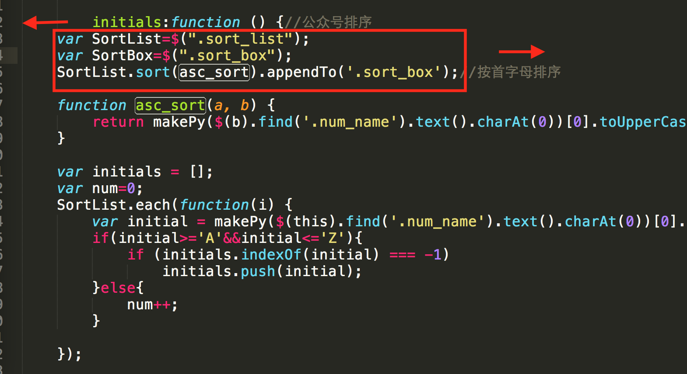
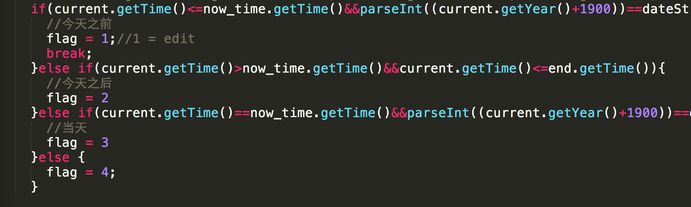
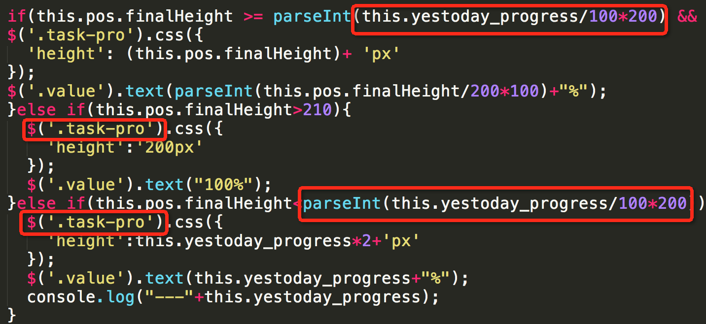

最近帮忙维护一些代码，可能是编写者的经验尚浅的原因，阅读起来比较辛苦，出现的问题主要是，代码重复逻辑，命名不规范以及一些小问题。网上搜索了一些资料结合相关代码说说如何提高代码的维护性。
首先说说为什么要维护性高的代码，原因很简单，通常一个项目迭代开发的概率是相当高的，那么时不时要进行代码重构，维护别人写的代码等等需要修改别人写的代码或者自己以前写的代码。如果代码写得乱七八糟，易读性差，这样会大大影响后者的开发效率。
首先看看一些栗子：
events:{
'click .Span1' :'Span1',
'click .check' :'Check',
'click #Cancel':'Cancel',
'click .cancel':'cancel',
'click .Span2' :'Span2',
'click .active':'cancelFocus'
}这里无论是html页面上的类，还是js函数的命名阅读起来非常困难，至少一眼看起来是看不懂相对应的函数是干嘛的。
使用有意义的或通用的ID和class命名：ID和class的命名应反映该元素的功能或使用通用名称，而不要用抽象的晦涩的命名。反映元素的使用目的是首选；使用通用名称代表该元素不表特定意义，与其同级元素无异，通常是用于辅助命名；使用功能性或通用的名称可以更适用于文档或模版变化的情况。
常用命名（多记多查英文单词）：page、wrap、layout、header(head)、footer(foot、ft)、content(cont)、menu、nav、main、submain、sidebar(side)、logo、banner、title(tit)、popo(pop)、icon、note、btn、txt、iblock、window(win)、tips等 ID和class命名越简短越好，只要足够表达涵义。这样既有助于理解，也能提高代码效率。
各公司应该有各自的代码编写规范，以上只是列出了比较通用而实用的点出来，顺便推荐几篇博文，看完会对命名规范有新的理解。
http://www.phpxs.com/post/4249
然后，继续看栗子： 
代码书写规范也是非常重要的，哪里需要换行，哪里需要缩进大家应该都知道，只是懒得改是吧，借助各种编辑器sublime、notepad、webstrom等写出来的代码理论上是很整洁的。
当然，写代码过程中难免会遇到从其他地方copy代码的情况，copy过来的代码通常格式是不一样的，建议调整一下格式使代码保持美观。
佛说，温故而知新，要提高代码的可维护性必须做到——精简，重用，有序
下面列出一些笔主曾经写过的几个难以维护的代码栗子给尝尝：
🌰1.

无谓的注释完全可用具有具有表达力的代码来诠释，重构一下：
var BEFORE_TODAY = 1,
AFTER_TODAY = 2,
TODAY = 3,
OTHER_DATE = 4;
if(current.getTime()<=now_time.getTime()){
flag = BEFORE_TODAY;
break;
}else if(current.getTime()>now_time.getTime()){
flag = AFTER_TODAY;
}else if(current.getTime()==now_time.getTime()&&……){
flag = TODAY;
}else {
flag = OTHER_DATE;
}
如果后期维护更新需要新增判断条件只需要增加修改常亮的值，更具灵活性。
🌰2 .避免重复

不能出现重复的表达式和和使用jquery查找同一个DOM元素，影响效率，使用变量代替,
var yestoday_progress = this.yestoday_progress/100*200;
var $task_pro = $('.task-pro');
if(this.pos.finalHeight >= yestoday_progress&&…){
...
$task_pro.css(...);
}🌰3. 列举一个曾经写过一段非常难以维护且效率低的代码：
for(var i=0;i<item.length;i++){
$('.item').eq(i).append("......");//省略号里是一堆html代码
}在一段for循环里使用append（）进行添加html代码效率低不说，维护时要在一堆没有格式化的代码里进行修改添加是多么痛苦的一件事情。 遇到这种情况建议使用模版渲染的方式代替如此低效率的方法。
最后，要提高所写代码的质量，最好的方法就是多写多实践，多看好项目的源码，积累经验。推荐一本相关的电子书。